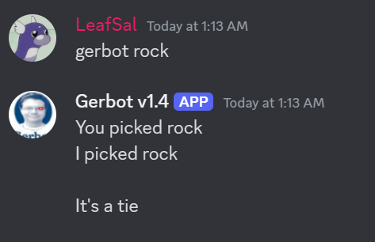
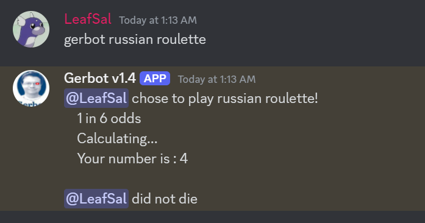
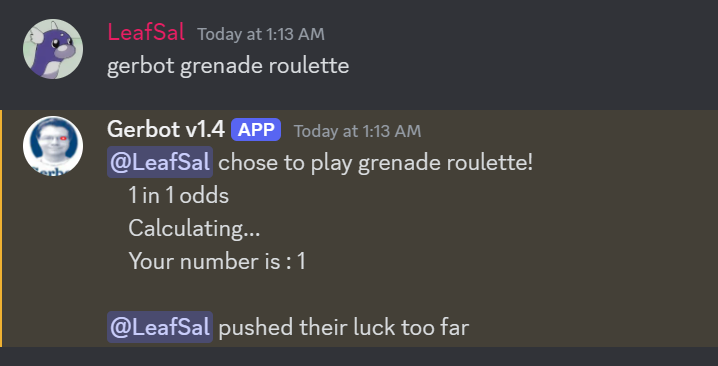
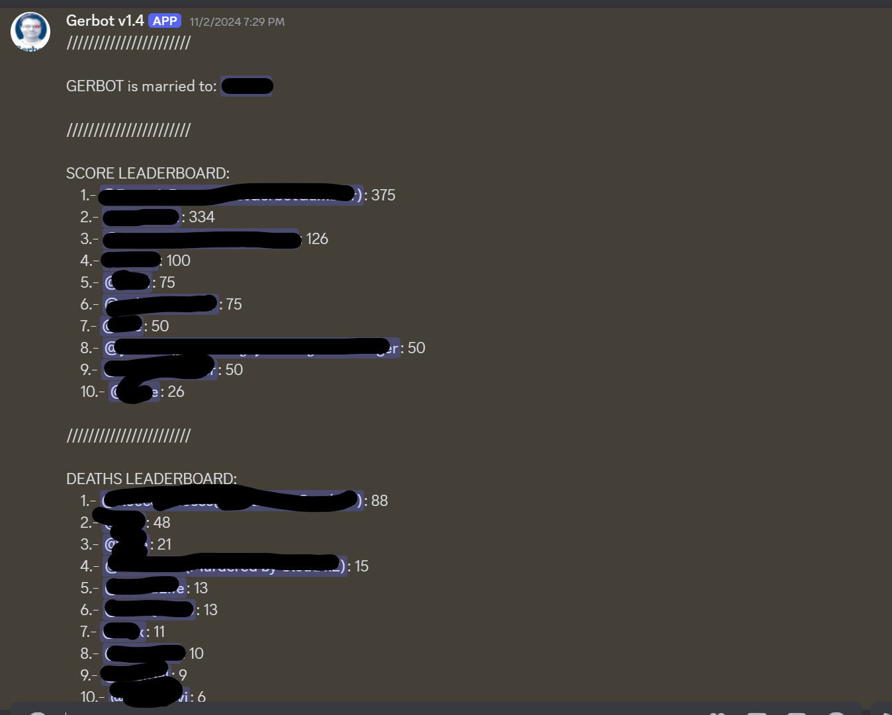
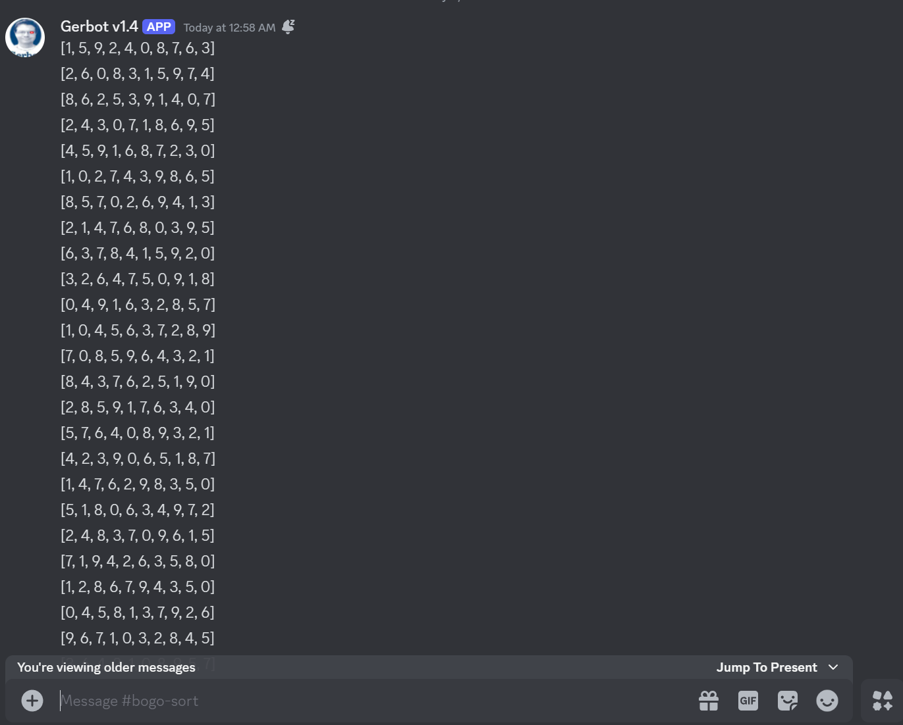
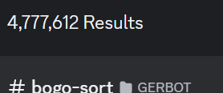

Hi! im,
Lucas Salinas
I'm a programmer and game developer based in Orlando, Florida.
I am currently studying computer science at the University of Central Florida.
I make games, music, art and random projects in my free time.
I am currently studying computer science at the University of Central Florida.
I make games, music, art and random projects in my free time.
GERBOT

A couple of commands include:
- ? : which treated the message as a question
- Who : which picked a random user in the server
- React : which sent a reaction image or audio
- Motivate : which sent a (not so) motivational message
- Timeout : which temporarily muted a user of choice, but in exchange muted the person who used the command for double the amount of time
- Marry me: which set the user as gerbot's current spouse (more on that in the leaderboard section)
Gerbot also has several games and other features available, such as:
Rock Paper Scissors:

Russian Roulette: (if you lose, you are kicked from the server)

Several Russian Roulette variations:

A leaderboard:
(Score is based on winning games)

And my favorite feature, BOGOSORT

Gerbot has a channel dedicated solely to sorting arrays using bogosort.
Every second, Gerbot will try to sort the array, and if it finally succeeds, then it continues with an array of size n + 1.
As of writing this, Gerbot has been sorting an array of size 10 for over 2 months, and in total, has sent almost 5 million messages.

I have a feeling I will be the the first one targeted during the AI uprising.